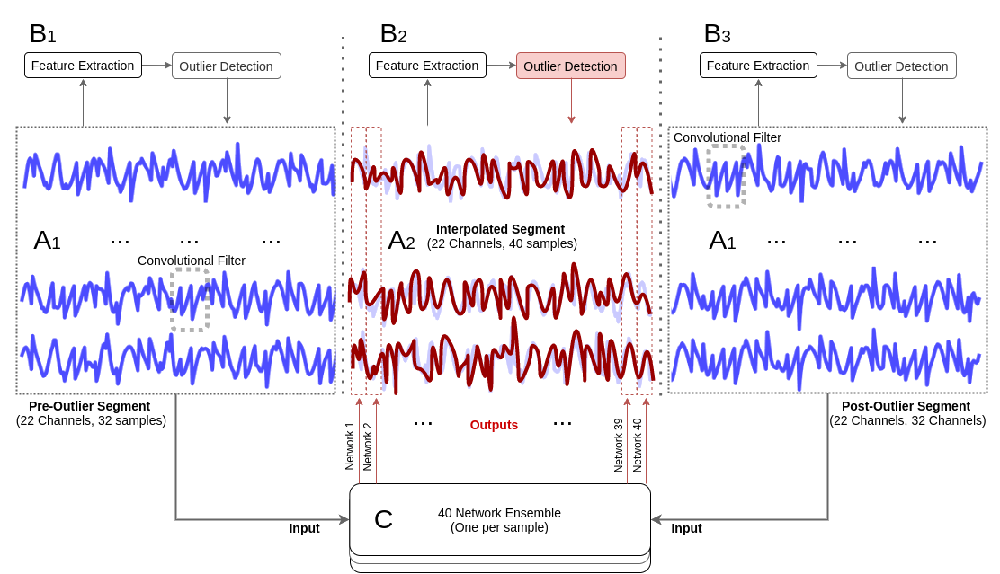
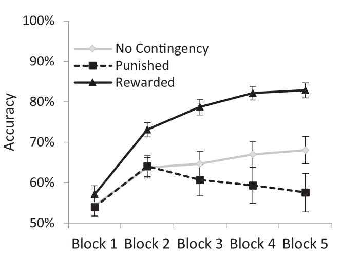

Tommy Morgan
Pre-Doc Research Assistant
Record Linking Lab
Brigham Young University
Hello!
I received my masters in cognitive psychology where I designed and programmed experiments probing attention, perception, motivation, and reward processing. I am looking toward adapting my skill set into becoming more technically focused.
I mostly spend my free time writing, gaming, or collecting dice.
Research
eHRAF_Scraper Python
Autonomous Scraper GUI for Yale's eHRAF website database. Allows easy extraction and saving of document files based on your specified query.
Autonomous Scraper GUI for Yale's eHRAF website database. Allows easy extraction and saving of document files based on your specified query.
FastAPI-Dice-APP PythonFastAPISQLiteHTML
Integrating an API using the Dice_Me project. Uses a relational database (SQLight), API (FastAPI), Python, JavaScript, CSS, and HTML.
Integrating an API using the Dice_Me project. Uses a relational database (SQLight), API (FastAPI), Python, JavaScript, CSS, and HTML.
Dice_Me Python
Convert image to a dice mosaic using scikit-learn to determine optimal feature preservation. Includes optional arguments for desired output dice.
Convert image to a dice mosaic using scikit-learn to determine optimal feature preservation. Includes optional arguments for desired output dice.
EEGExtract Python
A python library for extracting features from Electroencephalography (EEG) data. Actively maintained and used by several researchers worldwide.
A python library for extracting features from Electroencephalography (EEG) data. Actively maintained and used by several researchers worldwide.
CVT_Logistic_Analysis MATLAB
Matlab library implementing per-subject binary logistical regression analysis.
Matlab library implementing per-subject binary logistical regression analysis.
Teaching
Unsupervised EEG Artifact Detection and Correction
In Frontiers in Digital Health, Special issue on Machine Learning in Clinical Decision-Making. Volume 2, 2021
S. Saba-Sadiya and E. Chantland and T. Alhanai and T. Liu and M. Ghassemi

Value-Based Attention Capture: Differential Effects of Loss and Gain Contingencies
In Journal of Vision, Volume 20 Issue 5, 2020
M. W. Becker and S. Hemsteger and E. Chantland and T. Liu

Code
- PSY 395: Research Design and Measurement in Psychological Research (Lab Lecturer/Proctor, Teaching Assistant) Fall 2018, Spring 2021
- PSY 101: Introductory Psychology (Teaching Assistant) Spring 2019, Fall 2020, Fall 2021
- PSY 295: Data Analysis in Psychological Research (Teaching Assistant) Fall 2019
- PSY 235: Social Psychology (Teaching Assistant) Spring 2020
- PSY 342: Stereotypes, Prejudice, and Discrimination (Teaching Assistant) Spring 2020
- PSY 200: Cognitive Psychology (Teaching Assistant) Spring 2022